Composite anti-intrusion plate
UConn Formula SAE, 2025–present
A carbon fiber sandwich anti-intrusion plate projected to be 78% lighter than the 3.45 lb baseline. No test sample failed punch-shear testing to the FSAE requirements, and the simulation predicted the same results as the lab.
- 78%projected weight reduction versus the baseline plate
- 0 failuresacross the 100 × 100 mm punch-shear samples
- 0.6%largest gap between simulation and lab punch-shear results
- Team
- UConn Formula SAE
- My role
- Composite design and simulation
- Status
- Punch-shear validated; 3-point bend next
- Tools
- SOLIDWORKS, ANSYS ACP, Mechanical
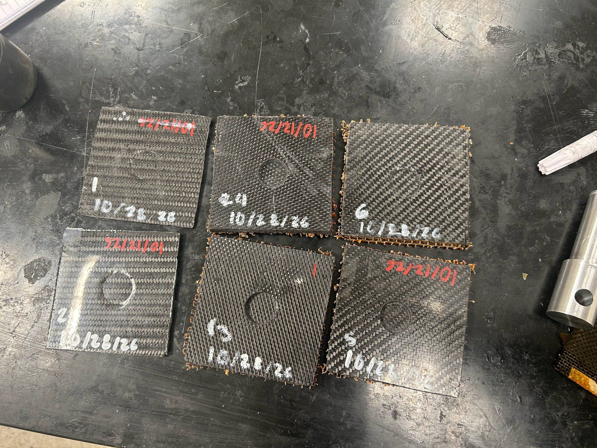
Overview
The anti-intrusion plate sits between the impact attenuator and the front bulkhead. In a frontal crash it stops the attenuator from punching into the driver's footwell. The rules allow a metal baseline plate, or a composite one if the team proves it meets the composite requirements through testing and analysis. I'm designing a 15 × 16 in carbon fiber sandwich plate that does the same job at a fraction of the weight.
Objective and constraints
Replace the 3.45 lb baseline plate with the lightest carbon fiber layup that still meets the FSAE rules for composite anti-intrusion plates.
| Constraint | Limit |
|---|---|
| Rules | FSAE Rules F.8.2.1(c) and F.8.3: a composite plate must not fail in a frontal impact and must carry a 120 kN static load spread over the 200 × 100 mm minimum impact attenuator area. We are proving this through F.8.3.2(b): laminate tests (F.4.2.2 three-point bend, F.4.2.5 perimeter shear) plus calculations. |
| Weight | As light as possible; the baseline plate weighs 3.45 lb |
| Size | 15 × 16 in, to cover the front bulkhead behind the impact attenuator |
| Manufacturing | Has to be buildable by the team, so a simpler layup wins when performance is close |
My role
What I did
- Modeled the plate geometry in SOLIDWORKS.
- Defined custom orthotropic material models in ANSYS ACP (Pre) so the simulation reflects the fabrics we actually use.
- Ran the ply orientation and stacking studies in ACP and ANSYS Mechanical.
- Tested 100 × 100 mm punch-shear samples to check the simulation against real parts.
What the team did
- Teammates helped me lay up the test samples.
- Members of the manufacturing team helped me make the punch-shear test fixtures.
Process and technical details
Method
- Modeled the plate in SOLIDWORKS and brought the surface into ANSYS.
- Built orthotropic material definitions in ACP: separate stiffness and strength values along and across the fibers, instead of one isotropic value like steel.
- Compared fabrics, ply counts and stacking orders against the F.8.3.1 criteria: no failure under 120 kN spread over the 200 × 100 mm impact attenuator area, checked through perimeter shear and 3-point bending per F.8.3.2(b). Skin failure is judged with the Tsai-Wu criterion, plus crush and shear checks on the honeycomb core.
- Picked the lightest layup that met those criteria and calculated the mass saving against the 3.45 lb baseline.
- Made perimeter shear samples of three candidate skins, tested them per F.4.2.5 and compared the results with the simulation.
Making and testing the samples
- The samples are sandwich panels: carbon fiber skins on a Nomex honeycomb core (0.19 in thick, 3 lb/ft³).
- The skins are wet laid up and cured under vacuum bags, then cut into 100 × 100 mm squares and bonded to the core with Loctite adhesive, with no core filler.
- Each sample's thickness is measured with calipers. The sample then goes on a supported fixture in an Instron testing machine with a 50 kN load cell, and a 25 mm flat punch is pushed through it over a 32 mm support hole, unclamped, as F.4.2.5 requires.
- Comparing the measured load and displacement with the simulation of the same layup shows how far the model can be trusted.
Weight calculation
Weight reduction = (baseline mass − composite mass) ÷ baseline mass
(3.45 lb − 0.76 lb) ÷ 3.45 lb ≈ 0.78
78% projected reduction, for a composite plate of about 0.76 lb
Material selection
Carbon fiber's strength and stiffness depend on direction, which is why the ply study mattered. We tested three skins:
- 3K 8-harness satin, 7 plies on each side of the Nomex core
- Hexcel 3K 2×2 twill, 7 plies on each side of the Nomex core
- AP Tech quasi-isotropic triaxial 12K, 6 plies as a solid laminate
The team prefers the AP Tech triaxial because it's the easiest to produce.
Trade-offs
- Producibility over the last bit of mass: a fully custom stack could be slightly lighter, but the triaxial layup is easier to build consistently.
Gallery
Select any image to see it full size. Use the arrow keys to move between images.
Analysis and test data

Lab test against COLA prediction: within 1% for satin, exact for twill. 
Tsai-Wu failure index, satin sandwich sample under the punch. 
Deformation, satin sandwich sample. 
Tsai-Wu failure index, twill sandwich sample. 
Deformation, twill sandwich sample. 
Tsai-Wu failure index, 6-ply solid triaxial sample. 
Instron curve, satin sample: first peak near 5 kN, maximum about 43 kN. 
Instron curve, twill sample: first peak near 3.4 kN, maximum about 17 kN. 
Instron curve, solid triaxial sample: maximum about 16 kN.


Fabrication
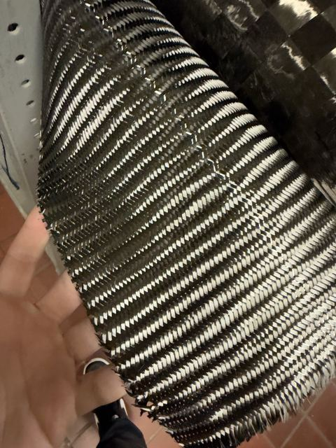
Carbon fiber fabric before layup. 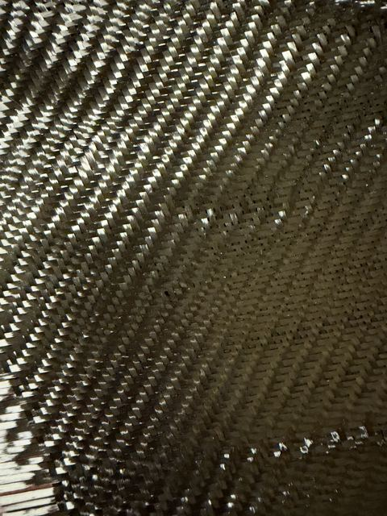
Close-up of the weave. 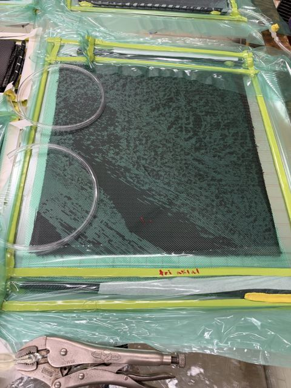
A skin curing under a vacuum bag. 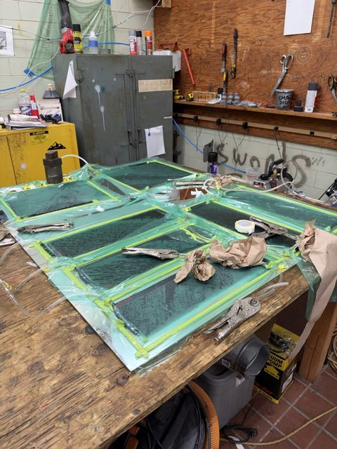
A full batch of skins curing at once. 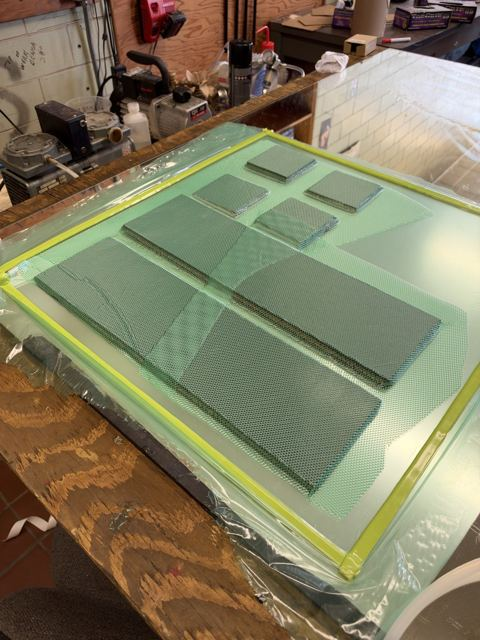
Cut samples under vacuum. 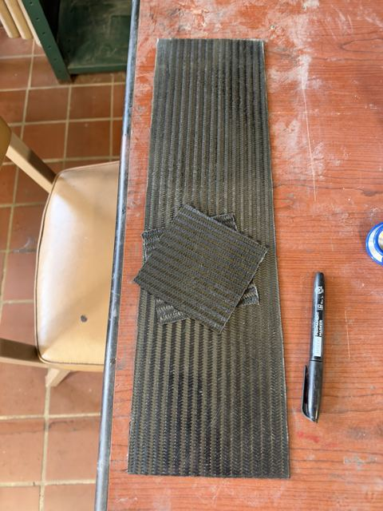
Cured skin with sample squares cut from it. 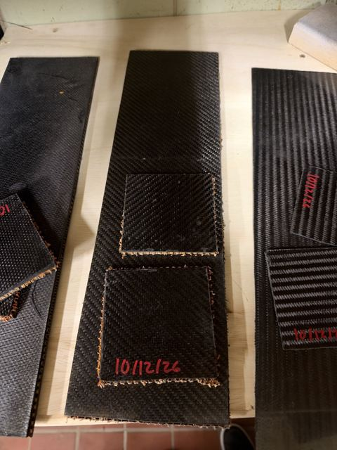
Samples bonded to the Nomex honeycomb core. 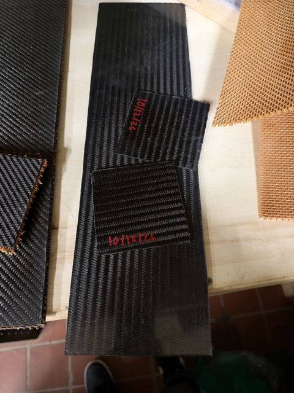
Bonded samples next to a sheet of core. 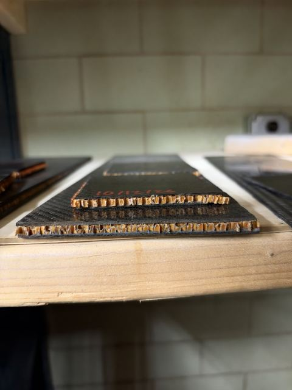
Edge view: carbon skins on both sides of the honeycomb core.
Punch-shear testing
Full punch-shear test, from first contact to failure. Punch loading a sample. Close-up of the punch going into a sample. 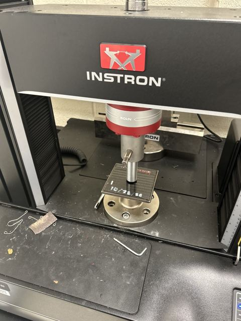
The Instron test setup. 
Sample on the fixture under the punch, below the 50 kN load cell. 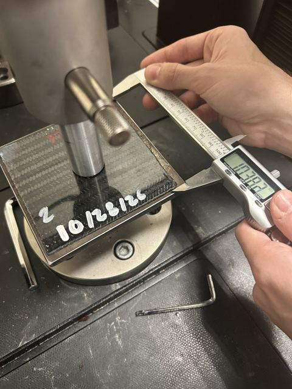
Measuring thickness with calipers before each test. 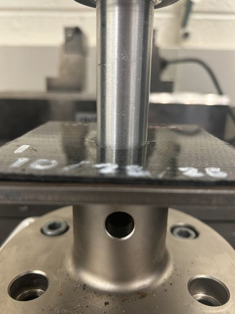
The punch on a sample, just before loading.


Failed samples
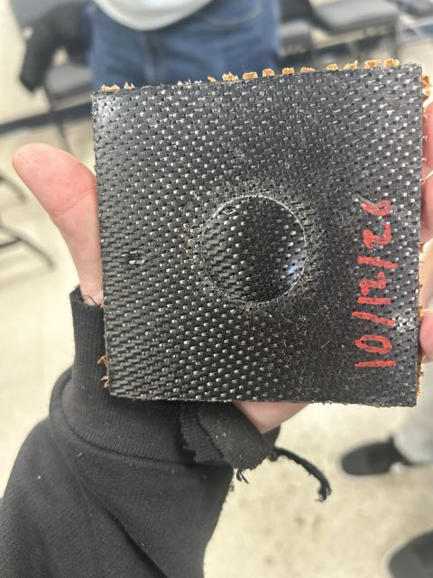
A failed sample, with a round dent where the punch broke through the top skin. 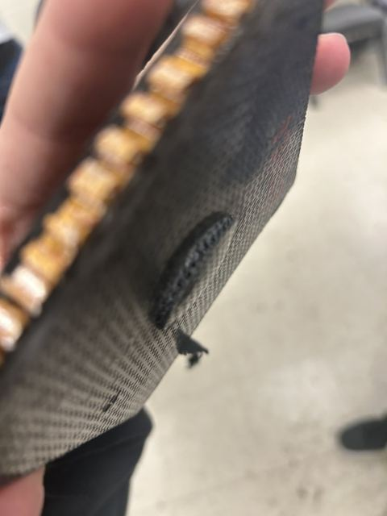
Side view showing the crushed core under the dent. 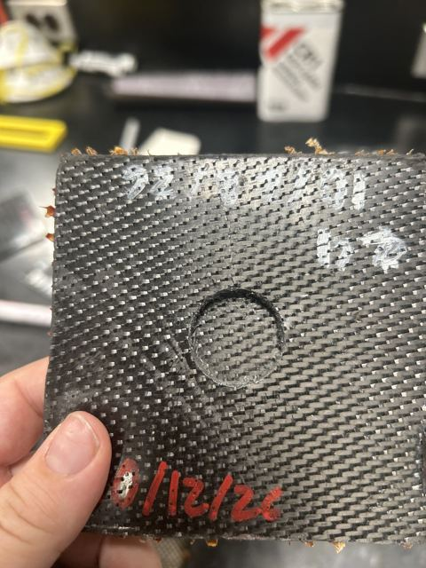
Another failed sample, made October 12. 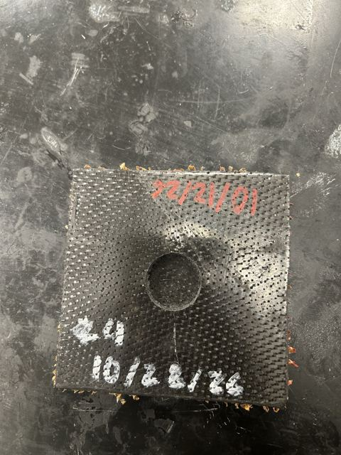
Sample 24 after testing. 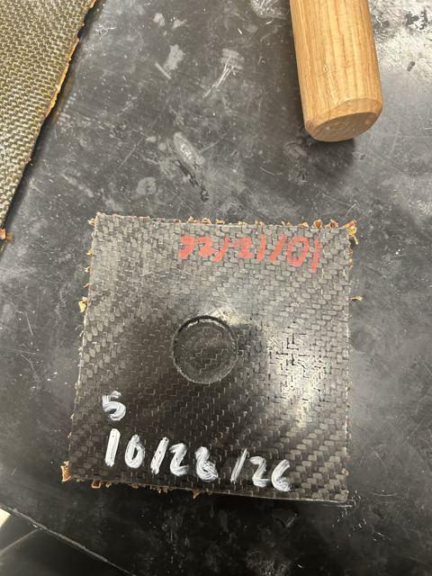
Sample 5 after testing. 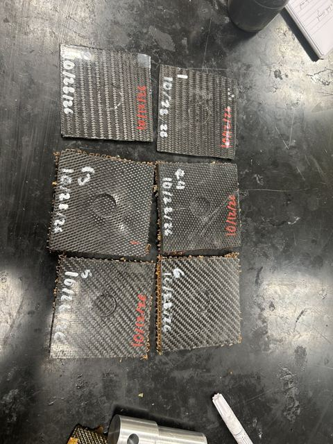
Tested samples laid out together for comparison.


Results and impact

- 78% projected weight reduction versus the 3.45 lb baseline, from the ACP simulation.
- No sample failed the requirement. Every perimeter shear sample peaked at roughly 16–43 kN, well above the 4 kN minimum that F.4.2.5(h) points to.
- The simulation matched the lab. COLA predicted first-peak loads of 5.09 kN for the satin sandwich and 3.43 kN for the twill. The Instron measured 5.12 kN and 3.43 kN.
What's next
The 3-point bend test is still to come. The machines at UConn can't run it at this size, so it has to be outsourced. That makes an accurate prediction from COLA beforehand especially valuable.